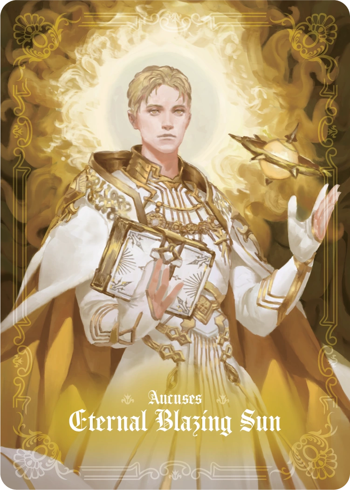

Overview
Because He is the proud Sun.
Book 2, chapter 492
The Eternal Blazing Sun is the Sequence 0 God of the Sun and the deity worshipped by the Church of the Eternal Blazing Sun. The Intis Republic follows this faith.
Honorific Name
Eternal Blazing Sun; Inextinguishable Light; Embodiment of Order; God of Contracts; Guardian of Businesses (永恒烈阳， 不灭之光， 秩序化身， 契约之神， 商业守护者)
The Eternal Blazing Sun also has the title: "Father of all Life ( Suǒyǒu shēnglíng de fùqīn)" but it's just something used by "His" Church when proselytizing. It's beyond "Him" in mysticism.3 This title is used to point to the Primordial God Almighty to use the power of the Chaos Sea.1Book 2, chapter 1115
Sacred Emblem
Eternal Blazing Sun' Sacred Emblem is an abstract sun made of gold and surrounded by lines.4 5
A Sacred Emblem is the symbol of the Gods worshiped and glorified by people in the 5th Epoch.
Appearance
In Third Epoch: He was a handsome, radiant, and energetic young man. He wore a pure white robe and had short golden hair. His appearance would bring a ray of light that would make the surrounding abnormally bright.
In Fourth Epoch: He looked like a young man in a pure white robe, holding a book of deeds in one hand and a golden sphere that resembled the sun in the other. He was handsome and spirited.
Twisted Version: A young man wearing a pure white robe. His face was painted with a pure gold color, and there were tentacles in the form of light growing out of his skin. In his hands was a putrid-green book and a spear formed of light, and his chest and back were inverted.
- Twisted version was discovered in Forsaken Land of the Gods in the True Creator's Temple.
History
Lord of Mysteries
According to orthodox legend, the Eternal Blazing Sun, the Lord of Storms, and the God of Knowledge and Wisdom were formed from the spirit of the Original Creator. The three of them helped humanity through the Cataclysm during the Third Epoch along with the Evernight Goddess, the Earth Mother, and the God of Combat.6
In truth, "He" was once known as the White Angel Aucuses, one of the eight Kings of Angels who served under the Ancient Sun God during the Third Epoch. "He" was a loyal follower of the Ancient Sun God, brave, honest, having been that way from the time when "He" were weak till "He" became strong.7 "He" was not born as an Innate Mythical Creature, and only ascended to Angelhood later on.8
Later, Aucuses aligned himself with the Rose Redemption and became part of the faction led by Dark Angel Sasrir. This allegiance played a key role in the downfall of the Ancient Sun God.9 After "His" death, Aucuses capitalized on the chaos of the divine war and leveraged the power of the Evernight Goddess, ascending to Sequence 0 of the Sun.10
In the Fourth Epoch, all deities have "Their" own countries in poorer places and acknowledged the first Solomon Empire and the Black Emperor's rule over the Northern Continent in order to fight against the opposing factions. At this time, the Lord of Storms, the Eternal Blazing Sun, and the God of Knowledge and Wisdom had conflicts with each other due to "Their" neighboring pathways. Later on, "He" reached a common agreement with the other five Orthodox Gods, which led to the fall of the Black Emperor and the first Solomon Empire. Afterwards, the Six Gods supported the Tudor-Trunsoest United Empire that ruled the Northern Continent. When the Black Emperor was about to resurrect, the Six Gods helped Trunsoest to switch to Justiciar of the Justiciar, becoming the Night Emperor.
After the War of the Four Emperors, the Seven Gods (including the God of Craftsmanship who ascended during the war) fractured and supported different Angel Families of the Trunsoest Empire to form their own country.11 The Eternal Blazing Sun supported the Sauron Family to create the Intis Kingdom, and allied with the Feysac Empire under the God of Combat. The Seven Gods then began fighting each other for the 167 years of the Conflicts of the Seven Gods.12
Later on, in the Pale Era, when Death went mad and caused havoc on the Northern Continent with the Primordial Demoness,13 the Seven Gods joined force and caused the destruction of Death and a fatal blow to the Primordial Demoness. When the barrier around the Earth cracked at the end of the Fourth Epoch, the Seven Gods moved "Their" Divine Kingdoms into the Astral World to mend the cracks.14 "His" old Divine Kingdom on Earth later became the headquarters of the Church of the Eternal Blazing Sun.15
In the Fifth Epoch, "His" believers are mainly in the Intis Republic.
Klein once divined about the origins of the Mutated Sun Sacred Emblem, which contained the divine blood of the Eternal Blazing Sun. When Klein looked directly at "Him" due to the divination, he suffered extreme repercussions, which were eventually neutralized by the Sefirah Castle but he learned a few things thanks to that. One of them was the mention of a White Angel, which was the name of the Eternal Blazing Sun when he served the Ancient Sun God. The other is the fact "He" is extremely hostile towards Lord of Storms and God of Knowledge and Wisdom. It was revealed later, it's because "They" are Gods of the same group. Klein also learned the Sequences, Bard, Light Supplicant, Priest of Light potion formulas of the Sun, part of the Sequence 4, Unshadowed potion formula, and how to make a Flaring Sun Charm, a relatively high level charm in the domain of the Sun.16
All Seven Gods wanted to have a Black Emperor, but they were not unanimous in their candidate. As such, when George Augustus III managed to obtain the opportunity to become one through his preparations, the Seven Gods had no choice but to give their tacit agreement.17 However, eventually George III's advancement ritual failed and he died on the spot.
In the 1350 World War, "He" stood on the God of Combat's side and fought against the God of Knowledge and Wisdom in Lenburg.18 They lost the war.
"He", along with the Evernight Goddess, the Earth Mother, the God of Steam and Machinery, the Lord of Storms, and the God of Knowledge and Wisdom held off the Mother Goddess of Depravity when Mr. Door returned back to Earth because of Amon's and Medici's plan.19 20
During Klein's Apotheosis Ritual, "He" was on Klein's side. "He", the Lord of Storms and the God of Knowledge and Wisdom fought against Adam.21
Circle of Inevitability
"He" and Medici carried out a big conspiracy with the short-term goal of eradicating all the most formidable Evil God's bestowed in Trier and the long-term goal of helping Medici become a Great Old One.
"He" didn't repent or return to the Original Lord's side, nor did "He" submit to the Mother Goddess of Depravity who reigned above the gods. Instead, "He" chose the path of enduring pressure and facing the worst possible outcome to support a new Great Old One. This decision may have seemed nearly the worst, yet "He" embraced it wholeheartedly.22
Long ago, since the Third Epoch,23 fragments of the Primordial God Almighty's consciousness began reviving within "Him". For a time, "He" would even occasionally lose control of "Himself". After an extensive period, "He" finally managed to suppress "His" alienated self and achieve a fragile balance, which allowed "Him" to partially harness the power of the Chaos Sea. However, "He" had to tread carefully and limit the frequency of use. Otherwise, the corruption and alienation would deepen, and the balance would collapse.1
In The Day of Many Disasters in late 1359 of the Fifth Epoch, after the birth of Omebella, which caused the Primordial God Almighty's consciousness to be significantly strengthened within "Him", "He" was killed by the Evernight Goddess to prevent the Primordial God Almighty's resurrection inside "Him" at his request, because "His" pride made "Him" prefer dying as a god rather than losing "Himself" and lingering in torment.1
Translations
| Language | Name |
|---|---|
| English | Eternal Blazing Sun White Angel Aucuses |
| Chinese | 永恒烈阳 纯白天使 奥赛库斯 |
| Thai | สุริยเทพนิรันดร์ เทวทูตสีขาว ออเซคุส |
References
- Book 2, chapter 1115.
- Book 1, chapter 1177.
- Book 2, chapter 46.
- Book 1, chapter 261.
- Book 1, chapter 1033.
- Book 1, chapter 18.
- Book 1, chapter 1063.
- Author's WeChat post darkness_abilities, part 8.
- Book 1, chapter 1117.
- Author's WeChat post sun_formulas.
- Book 1, chapter 469.
- Author's WeChat post history.
- Book 1, chapter 217.
- Book 1, chapter 1271.
- Book 1, chapter 698.
- Book 1, chapter 140.
- Book 1, chapter 1087.
- Book 1, chapter 1259.
- Book 1, chapter 1352.
- Book 1, chapter 1353.
- Book 1, chapter 1376.
- Book 2, chapter 492.
- Author's WeChat post sun_formulas, part 35.
Source
Article adapted from the Eternal Blazing Sun article on the Lord of the Mysteries Fandom wiki (CC BY-SA). Chapter numbers follow that article's citation format.
Image gallery
